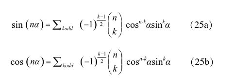
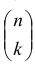
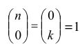

年轻的查尔斯九世曾经为了杀还是不杀同母亲激烈争论，甚至打了她一个耳光，不过最后还是不得不下令屠杀。事后，查尔斯九世无论如何也摆脱不了圣巴托罗缪屠杀的阴影，死难者的哭号声常常在他耳边响起，让他坐卧不宁。大屠杀后不到两年，二十三岁的查尔斯九世死在病榻上，咽气之前他神志迷乱，不停地叫着：“那血流！那屠杀！我怎么会受这些恶人指使？宽恕我吧，上帝！我真的迷失了！我真的迷失了！”
查尔斯九世死后，他的兄弟亨利三世（Henry III，公元1551—公元1589）即位。这位喜欢穿女人衣服、痛恨狩猎的年轻人在宗教方面相当容忍，天主教派感到威胁，马上在吉斯公爵亨利一世的带领下成立天主教同盟，组织军队，与国王抗衡。亨利三世任命弗朗索瓦·韦达为他的私人顾问，参加巴黎皇家议会的活动。从此，韦达的生活和皇家紧密联系在一起。
不久，亨利三世最年轻的弟弟病死。按照当时法国流行的萨利克继承法：皇族中的女性无权继承王位。亨利三世没有子嗣，一场争夺即位权的战争骤然爆发，吉斯公爵干脆率军进入巴黎，亨利三世无奈，仓皇出逃。1588年12月，亨利三世让近卫军暗杀了吉斯公爵。这件事引起轩然大波，以天主教为主的巴黎议会通过议案，要对国王进行犯罪起诉。亨利三世只好再次逃出巴黎。
此时的弗朗索瓦·韦达因政敌的攻击，退隐到布列塔尼海边的一个小村庄。他大概为此非常庆幸，因为这给了他一个远离政治，潜心研究学问的绝好机会。四五年以后，他出版了著名的《分析艺术导论》，从这本书起，代数学进入了新的阶段。他采用了大量数学符号对方程进行表述，被一些人称为“代数之父”。符号化的工作当然并非始于韦达，而真正的完善化还需要将近三百年的时间，直到1837年德·摩根（Augustus De Morgan，公元1806—公元1871）的《代数学基础》问世。
韦达发现，对二次到五次的方程，方程的解和系数之间有明确的关系。还是拿三次方程（8a）来说吧，韦达证明，它的三个解x1，x2，x3同系数（系数这个概念也是韦达引进的）a、b、c之间有如下的关系：
x1+x2+x3=-a，
x1x2+x1x3+x2x3=b，
x1x2x3=-c
这是因为方程（19）一定可以写成如下的形式：
（x-x1）（x-x2）（x-x3）=0 （24）
这个在今天看来非常简单的关系在代数史上相当重要。韦达去世二十几年后，另一个年轻的法国数学家把韦达的结果扩展到任意阶次的一元方程，后来成为解决多项式方程的重要定理。相对应的公式现在称为“维达公式”。维达（Vieta）是法语韦达的拉丁化名字。
韦达的另一个重要贡献是三角学。他在欧洲首次系统地用代数方法处理三角学问题，第一次找到了大角度正、余弦与小角度正、余弦的关系：

不要被这两个等式复杂的样子唬住。这里面，α是任意一个角度，n是个整数，nα是角度α的n倍。式子右边的Σ表示求和，也就是把所有的项都加起来。对（25a）来说，求和是对所有小于等于n的单数的k（1，3，5，等等）。对于（25b），求和是对所有小于等于n的双数的k（2，4，6，等等）。至于那个怪怪的

，它就是所谓的二项式系数，也就是贾宪三角形中的系数（在西方称为帕斯卡三角形），意思是从n个系数当中取出k个系数来。这只是为了表述的方便；并为此规定
。通过以上的关系，任何一个角度nα（n是个整数）的正弦和余弦最终都可以用sinα和cosα来表示。韦达把这种关系一直推到n=10。这个结果让他兴奋异常，大声宣称：“三角学分析同时需要几何算法和代数的秘密。我达到了迄今无人达到的深度。”确实，直到一百多年以后，瑞士人伯努利（Jakob Bernulli，公元1654 —公元1705）才找到用sinα、cosα来表达cos（nα）和sin（nα）的普遍公式。
还记得古希腊人的三等分锐角几何难题吗（参见数海拾贝5）？韦达发现，这个难题跟一元三次方程也有密切的关系。从（25b），他知道下面这个三角学等式对任何一个角θ都成立：
4cos3θ= 3cosθ+cos3θ （26）
两边同时乘以2，得到：
8cos3θ= 6cosθ+2cos3θ
令x=2cos θ，上述方程就变成：
x3-3x-2cos3θ
所以，任何一个给定的锐角3θ，求解3θ三等分之后的角度θ就相当于求解这个一元三次方程。
亨利三世被人暗杀以后，亨利四世即位，他是波旁王朝的第一位国王，也是一位历史上赫赫有名的君主。韦达被新国王重新招进宫廷。西班牙国王腓力二世是天主教同盟一贯的幕后支持者，亨利三世一死，腓力二世马上同企图推翻亨利四世的天主教同盟勾结。亨利四世截获了腓力二世写给天主教同盟的密信，立即委托韦达研究西班牙人的密码。几个月以后，韦达成功破译了腓力二世的信，亨利四世将腓力二世的密信明昭于天下，天主教同盟勾结西班牙的内幕曝光了。这个事件促使持续几十年的宗教战争结束，为此，腓力二世居然向教皇控告韦达，说他依靠巫术才猜出了密码。这种控告在今天看来非常可笑，可在当时的基督教世界属于大逆不道，搞不好会被活活烧死的。
1588年，亨利四世在枫丹白露接待了一位荷兰外交使节。亨利向他展示了自己的财富、艺术品和美丽的风光之后，身形壮硕的使节评论说，法国人在各方面都相当杰出，唯有数学不行。法国没有数学家。说罢，他拿出随身带来的荷兰数学家范鲁门（Adriaan van Roomen，公元1561—公元1615）的一道难题，宣称法国没人能解决这个问题。
亨利四世手下的学者们把数学题拿到手一看，差点儿昏过去。众人你看看我，我看看你，憋了半晌，一个字也说不出来。
这竟然是一个一元四十五次方程！用现代代数表示方法，方程是这样的：
x45-45x43+945x41-12 300x39+111 150x37-740 459x35+3 764 565x33-
14 945 040x31+469 557 800x29-117 679 100x27+236 030 652x25-378 658 800x23+
483 841 800x21-488 484 125x19+384 942 375x17-232 676 280x15+10 530 605x13-
34 512 074x11+7 811 375x9-1 138 500x7+95 634x5-3795x3 +45x=C （27）
其中C是一个常数。
亨利四世是个身材矮小的人，本来就在高大的荷兰使节面前感到不快。现在自己的学者又如此无能，这让他怒不可遏。突然，他想到了韦达，便转身对傲慢的使节大声说：“数学家，我们有！”然后对手下人喊道：“马上去找韦达先生！”
韦达来到枫丹白露的画廊，斜倚着高大的窗台看了几分钟纸上的难题，随即取出铅笔，在方程旁边飞快地写下一个实数解，转头扬长而去。傲慢的荷兰使者瞠目结舌，国王亨利四世和大臣们更是面面相觑，惊讶得说不出话来。第二天，韦达又给荷兰使者送去了这个方程的另外二十二个实数解。
韦达是如何在瞬间就解决了这个复杂的一元四十五次方程的呢？有兴趣的读者请看附录五。
还记得丢番图关于两个立方数之差的定理吗？如果a大于b，而且都是正的有理数，那么一定存在另外两个正有理数x和y，使得：
a3-b3 = x3 + y3 （28）
韦达说，让我们假定x＝z-b，y＝a-kz，其中k和z也都是有理数。于是，等式（28）就变成了：
a3-b3 = （z-b）3 + （a-kz）3
对这个一元三次方程的解，他已经十分熟悉。最简单的解是当k=（b/a）3，这使他得到
x = a（a2– 2b2）/（a3 + b3）
y = b（2a2-b2）/（a3 + b3）
这样，丢番图的定理终于得到了证明。而韦达并没有停止在这里。他接着考虑另外两种情况a3 + b3 = x3 + y3和a3-b3 = x3-y3，并证明它们也都有实数解。后来费马证明，任何两个数的三次方之和都可以用另外两个数的三次方之和来表示；另外这两个数的立方之和又可以用第三对数的立方之和来表达，等等，无穷无尽。
韦达后半生紧紧跟随亨利四世。1593年，亨利四世为了得到多数法国人的拥戴再次转信天主教，韦达也跟着转教。两年后，亨利四世对西班牙宣战，同时在国内全面消除天主教同盟的反抗。韦达到处奔波，消除人们对国王的疑虑，一直工作到身心交瘁，被亨利四世送回家乡。临终前，他拒绝向上帝认罪，因此一些近代学者认为他是无神论者。无论他的信仰是什么，韦达利用法律辩护保护了许多忠诚的教徒，无论是天主教的，还是新教的。在这一点上，他也远远超出了他的时代。
弗朗索瓦·韦达把几何学问题代数化，走的是和古希腊数学家相反的路子；在他去世三十四年后，笛卡尔继续沿着他的方向走下去，发表了数学史上第一部现代著作《几何》。
“我从韦达结束之处开始。”笛卡尔说。
寻求数学里的真理时，有一个确定的方法，据说是柏拉图发现的。赛翁称之为分析。
韦达
（注：此处的赛翁是指Theon of Smyrna， 公元前二世纪古希腊数学家、哲学家）
没有解决不了的（数学）问题。
韦达：《新代数》